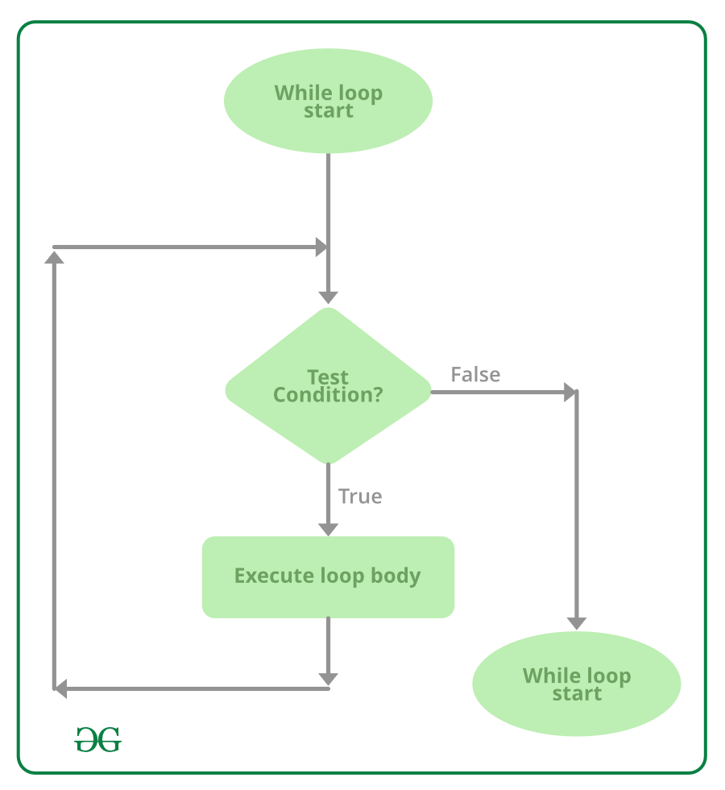

|  |
while loop is used to execute code as long as a condition is true. It is helpful when you do not know how many times you need to execute the functions, but you know the condition that will stop the process. |
$x=0; //instruction 1
while ($x!=0) { //loop 1
echo $x; //instruction 2
$x++; //instruction 3
}